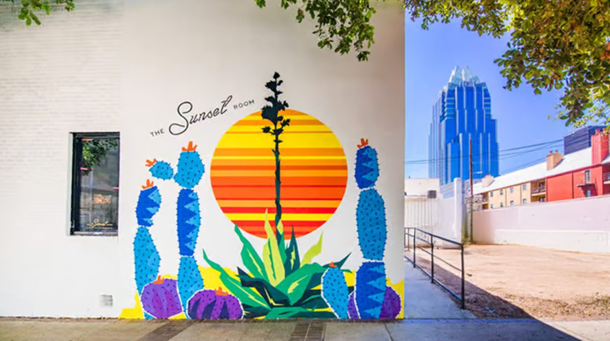
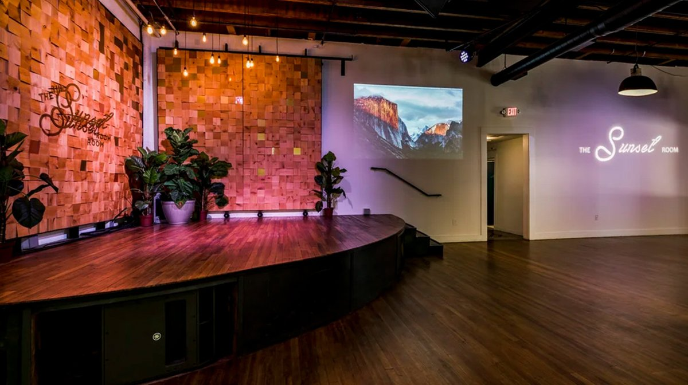

310 E 3rd St, Austin
TX 78701, United States


What happens when AI agents encounter tasks they cannot solve? Most agents fail because their capabilities are fixed. This talk explores a new approach using only open-source frameworks where agents can now adapt themselves by dynamically generating and integrating new tools at runtime. We will examine the architectural mechanisms that enable this, including how new functionality is validated and incorporated safely during execution. Through a live demo, attendees will see an agent encounter a novel task, build the required capability, and complete the workflow without redeployment. Attendees will additionally gain practical engineering insights into the tradeoffs and design considerations involved in building autonomous agentic systems that evolve beyond their original design.
Sandhya Subramani is a Senior Developer Advocate for Generative AI at Amazon Web Services, specializing in applied AI research and production-grade machine learning systems. She previously served as a Lead Applied AI Scientist at a stealth AI startup and as a Data Scientist at Warner Bros. Discovery, where she focused on applied AI/ML research and data-driven product development. Earlier in her career, she worked as an AI Engineer at Fidelity Investments within enterprise cybersecurity. Sandhya’s expertise spans generative AI, NLP, applied machine learning research, and translating advanced AI capabilities into real-world applications.
Most LLM training data and enterprise RAG pipelines depend on document ingestion, yet traditional tools waste tokens on lossy formats and struggle with real-world PDFs. The cost compounds at scale: inefficient document representation means higher training costs, larger context windows consumed, and degraded retrieval quality.
In this talk, I'll introduce Docling, an open-source document processing engine that takes a different approach. Docling uses purpose-built deep learning models to parse documents the way humans read them, preserving hierarchy, extracting tables, and maintaining reading order. I'll also introduce DocTags, a markup language we designed specifically for LLM tokenizers. DocTags uses 30-45% fewer tokens than HTML for the same content, and each tag maps directly to a single token, so you're not wasting context window space on markup overhead. We'll look at how IBM and Hugging Face used Docling to process 475 million PDFs for the FinePDFs dataset, extracting 3 trillion tokens at 50x lower cost than VLM-based approaches. I'll also cover IBM's work through LF AI & Data to establish DocTags as an ISO standard, creating a shared representation format that's optimized for both LLM training and inference.
Docling is fully open-source under MIT license, so you can run it locally for sensitive data and air-gapped environments.
Mingxuan Zhao is a Software Developer II at IBM working in Open Technology. A graduate of the Cockrell School of Engineering at the University of Texas at Austin, Mingxuan focuses on building developer-focused tools and contributing to modern web and cloud technologies. Based in New York, Mingxuan works on open and collaborative engineering initiatives within IBM.
As AI moves from experimental pilots to production MLOps pipelines, defining what truly constitutes "Open Source AI" has become a critical engineering challenge. This session cuts through the hype to provide ML engineers, data scientists, and infrastructure architects with practical frameworks to evaluate model transparency, mitigate licensing risks, and navigate the complexities of deploying "open" foundation models. Attendees will walk away with the skills to: - Deconstruct the AI Stack: Understand the core differences between traditional open-source software and the AI triad. - Evaluate True Openness: Apply frameworks like the Open Source AI Definition (OSAID) to assess model viability for fine-tuning. - Spot "Openwashing": Identify the operational risks and licensing traps hidden behind "open weights" models to protect your deployment pipelines and long-term infrastructure.
Alfonso Cancellara is an OpenShift-focused Red Hat Technical Account Manager. Beyond his day-to-day role, he's a passionate Open Source advocate and a speaker at conferences and industry events, exploring how Open Source Software fuels innovation.
Every team says they want better observability, but adding OpenTelemetry instrumentation is repetitive, tedious, convention-heavy work. Wah wah wahhhh, what a drag. Enter Spinybacked Orbweaver to save the day! Spinybacked Orbweaver is an AI-powered telemetry agent that can analyze your code, add the instrumentation, check its own work, and open a pull request. And it can do it consistently well, following your company's telemetry standards! This speaker built it, and she'll demo it live. Sparkles and rainbows! But here's where it gets interesting: how does the agent know if it did a good job? Two things. First, the OpenTelemetry project has a tool called Weaver that lets you define your team's telemetry standards as a machine-readable schema. Second, there's an emerging open specification called the Instrumentation Score that rates instrumentation quality on a 0-to-100 scale using standardized rules. The agent validates against both of these, plus some custom rules. When the agent fails its own checks, it gets the feedback and tries again. Generate, validate, learn, retry. You'll watch the whole thing happen against a real codebase. The agent discovers what to instrument, writes the code, gets rejected by its own quality checks, fixes its mistakes, and produces a PR. Along the way, you'll get grounded in what OpenTelemetry, Weaver, and the Instrumentation Score are, why they exist, and why good telemetry is worth caring about... but not enough to suffer the tedium of manual code instrumentation.
Whitney Lee is a creator and systems thinker who explores how observability, AI, and platform engineering connect across the cloud native ecosystem. She brings humor, depth, and clarity to complex technologies while building original frameworks that help others understand how systems fit together. She runs a vibrant YouTube channel, hosts Datadog Illuminated and Software Defined Interviews, has delivered two KubeCon keynotes and countless breakout talks, and combines storytelling and technical rigor to illuminate the human side of cloud native engineering.
Modern enterprises face a critical paradox: despite processing billions of records and building sophisticated data infrastructure, business users often remain trapped in manual spreadsheets and wait days for simple insights. I solved this challenge by implementing agentic AI on top of an AWS data pipeline processing 45 billion records per month, enabling over 2,000 users across 37 teams to perform autonomous natural language analysis. This implementation achieved 25-40% productivity gains and a 60% reduction in time-to-insight. This talk explores the evolution from traditional BI dashboards to AI copilots and fully autonomous agents, demonstrating how agentic AI transforms data accessibility and shifts data teams from report factories to strategic partners.
Srinivas Pochincharla is a Senior Technical Program Manager at AWS, focused on building and scaling large enterprise data platforms. He specializes in data architecture and agile program delivery, leading initiatives like high-volume data pipelines that process billions of records to support cost allocation and forecasting.
Site Reliability Engineering was never meant to be about firefighting, yet too many teams find themselves stuck in an endless cycle of pages, postmortems, and quick fixes. Why? Because SRE is full of hidden traps — patterns that look like best practices on the surface but slowly erode reliability, burn out engineers, and stall progress.
In this talk, we’ll expose the 7 Deadly Traps of SRE, from the obsession with chasing “five nines,” to the cult of on-call heroism, to the false comfort of tooling and checklists. For each trap, we’ll unpack why it’s so seductive, how it quietly sabotages your team, and what to do instead.
You’ll walk away with a clearer lens on the pitfalls holding SRE organizations back, and a practical playbook to help your team escape firefighting mode and reclaim the true purpose of SRE: building systems - and cultures - that are resilient, scalable, and human-friendly.
Miko Pawlikowski is an SRE Author and a platform engineer at Quadrature. He has led large-scale infrastructure and SRE initiatives at Citadel and Bloomberg, with deep expertise in Kubernetes, cloud computing, and chaos engineering. Passionate about building resilient systems and communities, he brings together engineers worldwide through conferences and media projects.
In 2025 I gave an AI agent cluster-level permissions and walked away. Forty minutes later I had no cluster. The agent didn't hallucinate. It didn't go rogue. It force-refreshed etcd, then while trying to fix that, wiped the netplan configuration on every Linux node in the cluster. One bad decision made things worse. No gate stopped it anywhere in the chain. The instinct after an incident like that is to put humans back in the loop. That's the wrong lesson. The whole point of agentic AI is autonomous operation at machine speed. Slowing it down with manual approval gates defeats the purpose. The right fix is deterministic programmatic gates that let the agent move fast within a defined safe boundary. Most operations should never require a human. A deletion that meets the right criteria gets approved automatically. A deletion that doesn't gets blocked automatically. The safety guarantee comes from the gate logic, not from someone watching the terminal. This talk walks through the full failure chain and the Eight Guardrails Framework that came out of it: three enforcement layers spanning Claude Code pre-tool-use hooks, Git hooks, and Kubernetes infrastructure controls. These are not probabilistic guardrails. They are deterministic checks that fire before execution, enforce IaC-only infrastructure changes, apply least privilege so a dev-context agent can't reach control plane nodes, and trigger automated rollback when something goes wrong. The agent operates autonomously inside that boundary. Outside it, the pipeline stops it cold. The core principle: don't use probabilistic AI to enforce deterministic requirements. Build the gates programmatically, test them the same way you test your code, and let the agent run. Attendees will leave with the exact failure chain mapped to the gate that would have stopped it, the Eight Guardrails applied to concrete controls across their pipeline, and a gap checklist to find where their own setup lets agents operate outside a safe boundary.
Principal Training Architect with 30 years of infrastructure experience across federal, Fortune 50, and startup environments. Has personally taught over 100,000 engineers platform engineering and AI/ML infrastructure. Workshop ranked third most-selected at KCD Texas 2026. Speaker at KubeCon EU Cloud Native University and KubeAuto AI Day Europe, Amsterdam. The cluster deletion incident described in this talk actually happened.